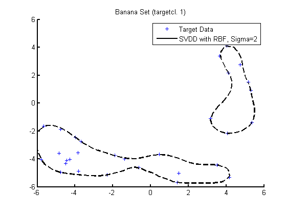
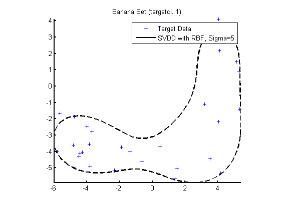
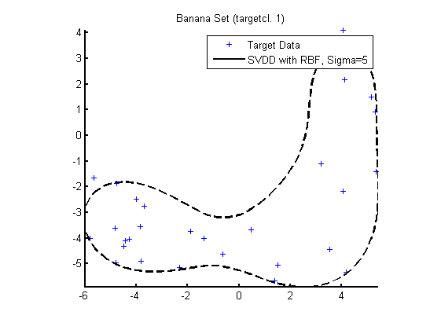
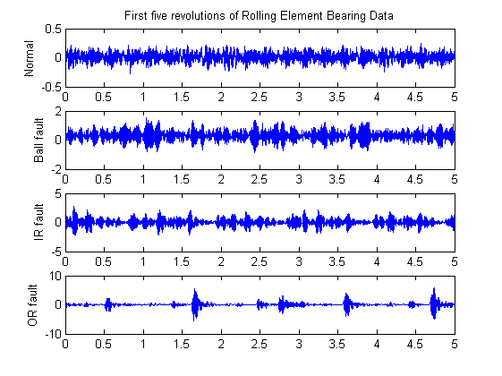
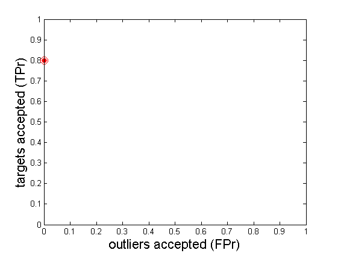

Support Vector Data Description (SVDD) of Roller Bearing time series
Detection of Outliers in Rolling Element Bearing Datasets using Support Vector Data Description
Contents
SVDD sample
Creates a banana-shaped one-class dataset and calculates three different SVDD mappings with Radial Basis Functions with different Sigma values (1)
a = gendatb([30 30]); % Setting of the second class as target class a = oc_set(a,'1'); a = target_class(a); % Generation of test data b = oc_set(gendatb(200),'1'); V = axis; axis(1.5*V); % Training of three SVDDs H=[0;0]; fracrej = 0.2; figure(1); clf; hold on; s=scatterd(a); w1 = svdd(a,fracrej,2); h=plotc(w1,'k--'); H(1)=s; H(2)=h; legend(H,'Target Data','SVDD with RBF, Sigma=2'); hold off; figure(2); clf; hold on; s=scatterd(a); w2 = svdd(a,fracrej,3); h=plotc(w2,'k--'); H(1)=s; H(2)=h; legend(H,'Target Data','SVDD with RBF, Sigma=3'); hold off; figure(3); clf; hold on; s=scatterd(a); w3 = svdd(a,fracrej,5); h=plotc(w3,'k--'); H(1)=s; H(2)=h; legend(H,'Target Data','SVDD with RBF, Sigma=5'); axis equal; axis image;
Warning: Divide by zero. Warning: Divide by zero. Warning: Divide by zero.
 
 Preprocessing
Partitions Roller Bearing time signals into segments of 5 revolutions (2,3)
numberOfRevolutionsPerSegment=5; rpm=1796; sampleFrequency=48000; normalSegments=SegmentRotationTimeSignal(... normalRawData1797rpm48k,... rpm,... sampleFrequency,... numberOfRevolutionsPerSegment); ballFaultSegments=SegmentRotationTimeSignal(... ballFaultRawData1797rpm48k,... rpm,... sampleFrequency,... numberOfRevolutionsPerSegment); innerRacewayFaultSegments=SegmentRotationTimeSignal(... innerRacewayFaultRawData1797rpm48k,... rpm,... sampleFrequency,... numberOfRevolutionsPerSegment); outerRacewayFaultSegments=SegmentRotationTimeSignal(... outerRacewayRawData1797rpm48k,... rpm,... sampleFrequency,... numberOfRevolutionsPerSegment); numberOfDataPoints = size(normalSegments,1); deltaX = numberOfRevolutionsPerSegment/numberOfDataPoints; xScale = (0+deltaX):deltaX:numberOfRevolutionsPerSegment; %Plots the first segment of each dataset figure(1); clf; subplot(4,1,1), plot(xScale,normalSegments(:,1)), title('First five revolutions of Rolling Element Bearing Data') ylabel('Normal'); subplot(4,1,2), plot(xScale,ballFaultSegments(:,1)), ylabel('Ball fault'); subplot(4,1,3), plot(xScale,innerRacewayFaultSegments(:,1)), ylabel('IR fault'); subplot(4,1,4), plot(xScale,outerRacewayFaultSegments(:,1)); ylabel('OR fault');
Feature Extraction
Extracts Kurtosis (k),Mel Frequency Cepstrum Coefficients (c) and Multifractal Dimensions (m) as 27-tupels in the format (c1...c13,m1...,m13,k) (3)
normalFeatures = ... ExtractRollerBearingFeatures(normalSegments, sampleFrequency); %First normal features vector: normalFeatures(1,:) ballFaultFeatures =... ExtractRollerBearingFeatures(ballFaultSegments,sampleFrequency); %First ball fault features vector ballFaultFeatures(1,:) innerRacewayFaultFeatures =... ExtractRollerBearingFeatures(innerRacewayFaultSegments,sampleFrequency); %First inner raceway fault features innerRacewayFaultFeatures(1,:) outerRacewayFaultFeatures=... ExtractRollerBearingFeatures( outerRacewayFaultSegments,sampleFrequency); %First outer raceway fault features outerRacewayFaultFeatures(1,:) %ToDo: PCA to remove redundancies in dataset
ans =
Columns 1 through 5
93.2835 -4.5085 -0.4379 -8.3268 1.6988
Columns 6 through 10
-7.0603 -9.3236 7.2506 1.0004 2.6586
Columns 11 through 15
7.8623 -4.8782 -2.4223 1.2117 1.2668
Columns 16 through 20
1.3252 1.3862 1.4548 1.5351 1.6284
Columns 21 through 25
1.7247 1.7949 1.8255 1.8279 1.8174
Columns 26 through 27
1.8034 2.8706
ans =
Columns 1 through 5
110.4900 -11.2485 3.4535 -4.2647 1.8583
Columns 6 through 10
9.1920 -13.9305 13.3238 -3.7039 3.7564
Columns 11 through 15
9.4294 3.2273 2.1557 1.0654 1.0873
Columns 16 through 20
1.1120 1.1404 1.1719 1.2073 1.2458
Columns 21 through 25
1.2880 1.3342 1.3846 1.4401 1.5013
Columns 26 through 27
1.5676 3.2507
ans =
Columns 1 through 5
116.9204 -16.0576 2.6369 -7.1706 -20.4653
Columns 6 through 10
-4.5033 -13.7211 7.0555 -7.6276 15.8025
Columns 11 through 15
4.1259 1.8448 -2.5223 1.0527 1.0726
Columns 16 through 20
1.0967 1.1235 1.1541 1.1884 1.2270
Columns 21 through 25
1.2699 1.3183 1.3725 1.4342 1.5051
Columns 26 through 27
1.5871 3.9930
ans =
Columns 1 through 5
113.5618 -13.7492 4.9438 -7.4862 -4.8346
Columns 6 through 10
-14.2957 -15.5283 20.2440 -0.5760 9.8308
Columns 11 through 15
0.8089 -1.9020 10.2831 1.0773 1.1036
Columns 16 through 20
1.1325 1.1653 1.2015 1.2425 1.2877
Columns 21 through 25
1.3385 1.3962 1.4615 1.5357 1.6177
Columns 26 through 27
1.6972 19.1720
Training and test set generation
Creates a target dataset with normal features for training and a dataset with target and outlier samples for testing a Support Vector Data Description (1)
normalFeaturesDataSet=dataset(normalFeatures);
ballFaultFeaturesDataSet=dataset(ballFaultFeatures);
innerRacewayFaultFeaturesDataset=dataset( innerRacewayFaultFeatures );
outerRacewayFaultFeaturesDataset=dataset( outerRacewayFaultFeatures);
%Creates a target data training set with normal features
targetData =...
gendatoc(normalFeaturesDataSet);
%Creates an outlier dataset with ball fault features
ballFaultOutliers =...
gendatoc([], ballFaultFeaturesDataSet);
%Creates an outlier dataset with inner raceway fault features
innerRacewayFaultOutliers=...
gendatoc([], innerRacewayFaultFeaturesDataset);
%Creates an outlier dataset with outer raceway fault features
outerRacewayFaultOutliers=...
gendatoc([], outerRacewayFaultFeaturesDataset);
%Creates a test dataset with 50 random samples drawn from each dataset
numberOfTestSamples=50;
[targetTestData,targetTrainingData]=...
gendat(targetData, numberOfTestSamples);
[ballFaultTestData,]=...
gendat(ballFaultOutliers, numberOfTestSamples);
[innerRacewayFaultTestData,]=...
gendat(innerRacewayFaultOutliers,numberOfTestSamples);
[outerRacewayFaultTestData,]=...
gendat(outerRacewayFaultOutliers,numberOfTestSamples);
testData=[targetTestData;...
ballFaultTestData;...
innerRacewayFaultTestData;...
outerRacewayFaultTestData];
SVDD Training
Uses the target data to calculate an SVD mapping with a rejection rate of 0.2 and an RBF-Kernel with Sigma=5 (4)
w = svdd( targetData,0.2,5);
Warning: Divide by zero. Warning: Your Hessian is not symmetric. Resetting H=(H+H')/2.
Error evaluation
Calculates false negative (rejected targets) and false positive (accepted outliers) rates and plots a ROC curve (1)
e = dd_error(testData,w); %False Negatives: e(1) %False Positives: e(2) %Roc figure(2); clf; plotroc(dd_roc(testData*w),'r');
ans =
0.2000
ans =
0
 References
- PRTools4, A Matlab Toolbox for Pattern Recognition Version 4.1 (R.P.W. Duin,D.M.J. Tax et al.)
- http://csegroups.case.edu/bearingdatacenter/pages/welcome-case-western-reserve-university-bearing-data-center-website
- "Early Classification Of Bearing Faults Using Hidden Markov Models,Gaussian Mixture Models, Mel-Frequency Cepstral Coefficients and Fractals" (Marwala et al)
- "Support Vector Data Description" (Tax,Duin) http://mediamatica.ewi.tudelft.nl/sites/default/files/ML_SVDD_04.pdf